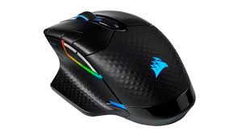

<h1>Gaming shop</h1>

<h2> accsesories</h2>

<p>Keyboard</p> 

<p>price:50$</p>
<button>Buy</button>

<p>Mouse</p>

<p>prise:120$</p>
<button>Buy</button>

<p>Mousepad</p>

<p>prise:20$</p>
<button>Buy</button>


<p>Pc case</p>

<p>prise:80$</p>
<button>Buy</button>


<p>Headphones</p>

<p>prise:100$</p>
<button>Buy</button>


<!-- სემანტიკური tags შეიძლება დაეხმარონ დეველოპერებს და დიზაინერებს გვერდის კოდირებაში ან სწრაფად იპოვონ კონკრეტული ელემენტი, რომელიც საჭიროებს განახლებას ან რედაქტირებას -->

<!-- ფორმატირება არის ტექსტის ფორმატირების პროცესი უკეთესი გარეგნობისთვის ფორმატირების თეგი გვაძლევს შესაძლებლობას დავაფორმოთ ტექსტი CSS-ის გამოყენების გარეშე -->
